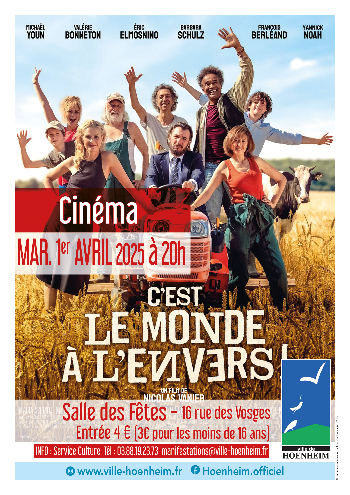

- Cet événement est terminé
Cinéma : C’est le monde à l’envers
1 avril 2025 à 20 h 00 min - 22 h 00 min
Navigation de l'événement

La ville de Hoenheim vous invite à une séance de cinéma le mardi 1er avril 2025 à 20H à la salle des fêtes.
Plein tarif : 4 Euros / Tarif réduit (moins de 16 ans) : 3 Euros
Le film « C’est le monde à l’envers » est pour tout public.
Cette comédie dramatique dure 1h 54min.
C’est la crise, tout s’arrête : plus d’eau, plus d’électricité, plus de réseau… Stanislas, homme d’affaire parisien, perd tout y compris sa fortune. Lui qui déteste la campagne est contraint de partir se réfugier avec sa femme et son fils dans une des exploitations agricoles qu’il avait acquise dans un but spéculatif. Mais à son arrivée, il se retrouve face à Patrick et sa famille, agriculteurs exploitants des lieux, qui n’ont pas l’intention de quitter la ferme… Dans cette atmosphère chaotique où tout est inversé, nos deux familles que tout oppose parviendront-elles à cohabiter pour survivre et peut-être reconstruire ensemble un nouveau monde ?